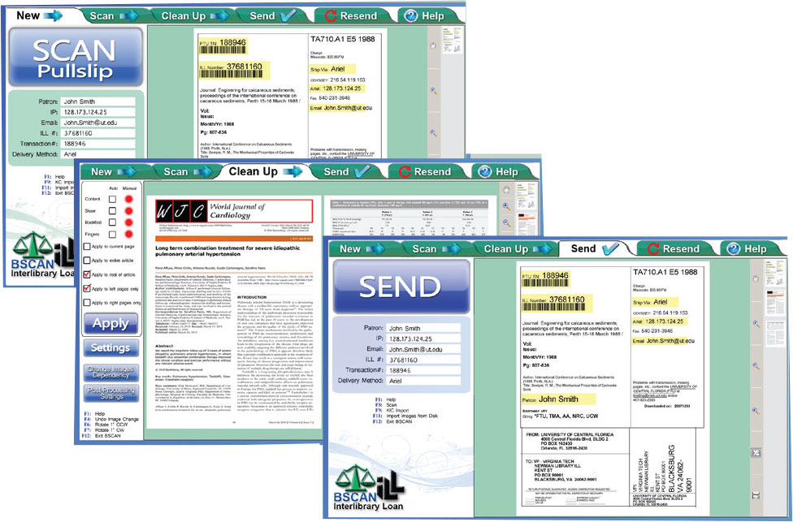

Complete Interlibrary Loan Scanning and Image Treatment Workflow System
... better image quality, fewer errors, and easier operation
In the early days of digital interlibrary loan and digital document delivery, the available software was simple and image quality expectations of requestors were low. Times have changed. The demand for faster workflow delivery and perfect, printer-ready images has made the current software environment complex, creating significant challenges in training new employees. BSCAN ILL simplifies existing processes and produces perfect, printer-ready images.
BSCAN ILL starts by eliminating the need to manually enter requestor information. BSCAN ILL automatically reads the information that is required by interlibrary loan document de- livery software from scanned pull slips, not only saving time but also eliminating human error.
Articles are scanned using one of a family of high speed face-up scanners: Click Mini, Click, and Bookeye 4 V3, V2 & V1. By eliminating the constant book flipping required by flatbed scanners, these face-up scanners are three to five times faster than the fastest face-down scanners, and they do not cause book spine damage. For low volume ILL operations, BSCAN ILL also runs BookEdge flatbed scanners, employing their book edge feature and a faster mode that scans two pages at a time.
Once articles are scanned, BSCAN ILL's powerful image treatment capabilities automatically eliminate skew and remove unwanted black borders, fan and gutter.
Finally, BSCAN ILL automatically sends requests through ILLiad/Odyssey, Ariel, RAPID, Clio, Article Exchange, Relais, FTP, and e-mail and can notifiy ILLiad/Odyssey in each case, all without any need for further human intervention. Resending articles is also a snap.
BSCAN ILL Dramatically Improves ILL Digitization
A fundamental tenet that has always bound the academic research community together is open sharing of newfound knowledge. Today, this open sharing is going on at a feverish pace and digital interlibrary loan services are an essential vehicle. Scholars from all fields are becoming increasingly dependent on their ability to acquire journal articles in just one day.
In the early 1990s, the pioneers of interlibrary loan digitization had no choice but to adapt commercial scanning equipment to meet their needs. Ariel was the only available document delivery software and there were no scanners made specifically for scanning books, journals and maps. Over time, that changed. Planetary scanners became available in the late 1990s. The first release of BSCAN ILL automatically read (using OCR) the requestor information from pull slips without manual keying, supported rapid scanning and image cleanup, and automatically posted to Ariel with the press of a single button. Since then, ILLiad, Odyssey, Ariel, RAPID, Clio and Article Exchange have been integrated into BSCAN ILL with the same hands-off automation. BSCAN ILL has a host of valuable features, many of which are not available with any other system.
In addition to allowing review of electronic articles and resource sharing to reduce per article scanning costs (e.g. for archival, electronic course materials creation, scanning projects), only BSCAN ILL offers you:
- One easy user interface, integrated seamlessly with Article Exchange, ILLiad/Odyssey, RAPID, Relais, Ariel, Clio, FTP & Email - reduces training time significantly
- Optimized for the latest technology in face-up scanners, including all Bookeye models, Click, Click Mini, and face-down scanners such as BookEdge and WideTEK 25
- Automatically reading of requestor information from pull slips
- Automatically sending without intervention by the scan operator
- Central management with central, portable and remote scanning
- Automatic hold of all scanned articles for up to 30 days for fast correcting and easy resending
- Automatic updating of ILLiad/Odyssey, even if the request was delivered by another means such as Ariel, Relais, Clio, FTP or email
- Automatic image cleanup and output of 'printer-ready' images